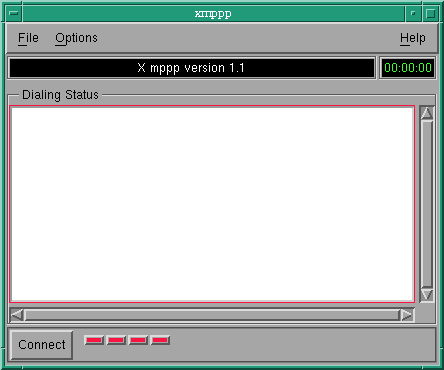
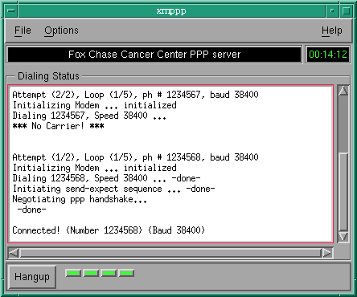

ppp dialers for Linux
by
Muhammad A Muquit
Fox Chase Cancer Center
Research Computing Services
| Initial Release |
Jun-26-1997 |
| Latest Release | Mar-22-1998 |
Table of Contents
Changes
Please read this section periodically to see what have been changed or added.
Download
The both archives contain the source. The second one contains statically built
binaries (mppp and xmppp) as well.
$ tar -xvzf mppp1.1b.tar.gz
or
$ tar -xvzf mppp1.1b_static.tar.gz
$ cd mppp1.1b
How to compileIf you want to compile with debug on, add -DDEBUG=1 in Makefile.no-moitf and Xmppp.tmp.
Compiling mppp
mppp is character based ppp dialer.
Before compiling, have a look at the file Makefile.no-motif. Then,
at the shell prompt, type:
$ make clean
$ make -f Makefile.no-motif
The name of the binary is mppp. copy it somewhere in your path.
Compiling xmppp
xmppp is X/Motif based ppp dialer.
A statically linked version of xmppp is supplied. If you want to compile,
your must have at least Motif 1.1. If you want to change anything, have a
look at Xmppp.tmpl. Then, at the shell prompt, type:
$ xmkmf
$ make clean
$ make
The name of the binary is xmppp. copy it somewhere in your path.
Appropriate fallback resorces are used at compile time. That means, the xmppp program will have a nice look without the app-defaults file. However if you insist on changing the resources, please look the file Xmppp.ad. Copy this file to /usr/lib/X11/app-defaults or (to your home direcoty) as Xmppp. If you change any resource, make sure that you do it right, otherwise xmppp will not look right. Even a empty resources file screw things up. I suggest not to install application resources file.
If you get error message about undefined constants B57600, B115200, B230400, and B460800, you have an old kernel. Remove the flag -DHIGH_SPEED=1 from Makefile.no-motif and Xmppp.tmpl.
mppp [options]
xmppp [options]
Where, the options include:
-config config_file specifies the config file
-h shows this help
-verbose verbose mode on
-V shows Version
-quit minutes exits keeping ppp connection open (only for
mppp). If the value of minutes is 0, then
the ppp connection will stay up until it
is disconnected manually. If a value is
specified then the pppd will be killed
after the time is elapsed.
For xmppp, all standard X toolkit command line options are available.
How to use
Before using mppp or xmppp, you must setup the configuration file.
mppp or xmppp can locate the configuration file in several ways. First, it looks
for a environment variable called MPPP. This variable indicates the
full path of the configuration file. If the variable does not exist, it
looks for a file called mppp.cfg in the directory .mpppdir at
the user's home directory. If you su and invoke the program, it will
look for the file mppp.cfg at the directory .mpppdir at root's home, not
yours. However, the location of the config file can be specified at command
line with the flag -config.
The command line takes precedence over everything.
The easiest way to setup the configuration file as follows. From inside the
mppp source directory, type the following comamnds at the shell prompt:
$ mkdir $HOME/.mpppdir
$ cp ./dotmpppdir/* $HOME/.mpppdir
$ cd $HOME/.mpppdir
$ /bin/ls -l
Now you must edit the file mppp.cfg and fccc.scr using your favorite
text editor. The file fccc.scr is the script file which holds the send-expect
string sequence for establishing ppp connection. You can change the name/path
of this file by editing mppp.cfg file.
Configuration file
A sample configuration file is shown below. Please read the comments in
the file and edit as necessary. If you followed the steps above, the file
will be at the directory .mpppdir at your home directory. The name
of this file is mppp.cfg. You like to keep it somewhere else, and
change the name, you must run the programs with -config newname.cfg.
You also have to edit the file specified
by the directive Script.
######################################################################### # Config file for mppp and xmppp 1.1b # This file contains all necessary information in order to make a ppp # connection to a ISP or to a PPP server running on a host. The name # of the directives are not case sensitive but DO NOT change the name, # change cases if you like. # # Edit the directives as needed. # # URL: http://www.fccc.edu/users/muquit # email: ma_muquit@fccc.edu # May-03-1997 (a vacation hack) # ######################################################################### # # Version Current mppp version. This directive must be present. # MpppVersion 1.1b # # PPPcommand full path of pppd. This is the path of pppd in my Linux # box running Redhat 4.1. It is just the path of the pppd, # DO NOT add any parameters here. # PPPCommand /usr/sbin/pppd # # MpppLogfile The file keeps the connection records. If the file name # does not start with a /, then the base directory of the # file will be the base directory of this configuration file. # #MpppLogfile /users/muquit/.mpppdir/mppp.log MpppLogfile mppp.log # # Location A small description of your PPP server. This name shows # up at the top label in xmppp after making the connection. # Location Fox Chase Cancer Center PPP server # # MaxRedial Maximum Number of attempts to dial a specific number if the # Number is busy or dialing fails for some reason. MaxRedial 5 # # MaxLoop Loop through the list of numbers this many times # MaxLoop 5 # # Numbers The phone numbers. The syntax is Number1:baud|Number2:baud.. # If the first number is busy after MaxRedial, the second # number is tried MaxRedial time and so on. I'm just # putting some fake numbers, replace them with yours. # Numbers 123-4567:38400|123-7890:38400|123-9876:38400 # # Script The name of the file which holds the send-expect sequence. # If the filename does not start with /, the file must be # located at the same directory where this configuration file # if located. You must edit this file. Name the script to # something which makes sense to you. Look at the supplied # fccc.scr, for syntax and the procedure to know about the # send and expect sequence. The way I find out is, I dial to # the PPP server using minicom and keep a note of the things # I had to type to go to the ppp prompt. # #Script /users/muquit/.mpppdir/fccc.scr Script fccc.scr # # Device The name of the modem device. If the modem is connected to # serial port 1, then the modem device usually is /dev/cua1, if it # is connected to serial port 2, the modem device usually is # /dev/cua2 etc. I made a symbolic with the device as # /dev/modem. This way I do not need to remember cua1, cua2 etc. # Device /dev/modem # #InitString Modem Init string. This string is sent to modem to initialize # it. The following string works great with my Practical # Peripherals, PC288MT V.34. at&f1 loads the IBM compatible # factory settings. Note, I used M0 to turn off modem sound. # InitString AT&F1M0 # #InitOKResponse Expected response from modem after sending the InitString # InitOKResponse OK # # DialString Modem Dialing string. # DialString ATX4DT # # DialOKResponse Expected response from modem after connecting # This is usually "CONNECT baud", e.g. CONNECT 38400 # But if you just look for CONNECT, you can wait for any # baud. DialOKResponse CONNECTAnd the following is the script file specified by the directive Script
###################################################################### # a Script file for mppp # ma_muquit@fccc.edu, May-31-1997 # # The format of this file is send expect sequence, one in each line. # #Connect to your ppp server using minicom or some other dialing software #and keep a note of the prompts and the string you responded with. You can #use a full or a partial string in the sequence. Try to avoid confusing #specification. This is what I need to make a ppp connection, it may very #significantly for you. # # Three characters are considered special, they are: ^cr, ^crlf and ^lf. # ^cr indicates Carriage Return (\r) # ^crlf indicates Carriage Return-Line Feed (\r\n) # ^lf indicates Line Feed (\n) # # NOTE: ^ is the literal ^ character, not a control character, that is # you'll type it as Shift+6 (Press shift and 6 key) # # DO NOT add ^cr or ^crlf or ^lf after any expect-send line. If you # need any of those, add each one on a separate line. # ###################################################################### send ^cr send ^cr expect Userid: send <Your login> expect ssword send <Your password> send ^cr expect > send ppp send ^cr
If you use this program to connect to your ISP, your might consider sending me the script file you use. Iit would be helpful to others who subscribe to the same ISP and do not how to write the script file. Do not forget to remove your password before sending it to me.
How it works
If mppp is invoked without any arguments for reading the configuration file
at command line, it will try to read the configuration file from the default
location. The default location is determined in two ways. First, it looks
for a environment variable called MPPP. The environment variable MPPP
specifies the full path of the configuration file. If the environment variable
MPPP does not exist, the program will look for a file called mppp.cfg
at the directory .mppdir at the user's home directory. The environment
variable and the hardcoded default can be overwritten by the flag
-config. Example:
mppp -config /some/path/abcd.cfg
or
xmppp -config /some/path/abcd.cfg
xmppp locates the configuration file exactly the same way, only difference
with mppp is that xmppp reads the file when the Connect button is
clicked.
It is possible to run mppp from cron. You might need to do this
if you need to connect somewhere at certatin time in order to download a file
for example. Here is how you can do this:
mppp -quit 30 > /dev/null 2>&1
mppp will disconnect after 30 minutes.
Screen shots
A sample mppp session is shown below.
$ mppp
Attempt (1/3), Loop (1/5), ph # 7282878, baud 57600
Initializing Modem ...initialized
Dialing 7282878, Speed 57600 ... -done-
Initiating send-expect sequence ... -done-
Negotiating ppp handshake...
-done-
--- Press Enter to close connection ---
Connected! (Number 7282878) (Baud 57600)
Sun Mar 22 15:21:02 1998 -> 00:00:37
|  |
| Figure 1: xmppp main window. |
The red indicator changes color from red to yellow to green as the state of connection progresses. The first red indicator changes to yellow as the modem initialization starts. It becomes green after the initialization succeeds. The second indicator goes to yellow as the dialing starts and becomes green as the connection is established with the ppp server. The third indicator becomes yellow as the send-expect sequence starts and becomes green as the send-expect sequences finishes by starting the ppp at the other side. The fourth indicator goes yellow as the pppd starts at the local machine and goes green as handshakes succeeds with the other side.
|  |
| Figure 2: xmppp, After ppp connection is established |
If the Hangup button is clicked, the pppd daemon gets killed and modem device gets closed and initialized back to its original state. A log of the connection is written to the file specified by MpppLog directive in the config file.
| Figure 3: xmppp icons before and after connection respectively | |
The default icon is shown on the left and the icon changes like the one on the right after the ppp connection is established. After the connection, the icon name acts as a timer (hr:min:sec) which shows the elapsed time. If you use fvwm95 or some other kind of window manager which do not display icons, then the icons won't be much useful to you. I use CDE, so I can tell right away if ppp is up or down just by looking at the icon.
1. After writing the message "Initiating send- expect sequence ...", the program just waits for ever. What's going on?
Answer: Check the script file. It must be wrong. What happening is: the program was expecting to read a specific string, but it never arrived. To solve this problem, Connect to your ppp server using minicom or some other dialing software and keep a note of the prompts and the string you responded with. Use this information to write the script file.
Copyright © 1997 by Muhammad A Muquit.
Permission to use, copy, modify, distribute this software is hereby granted, provided this copyright notice appear in all copies and that both that copyright notice and this permission notice appear in supporting documentation, and the name of my employer and Company not be used in in advertising or publicity pertaining to distribution of the software without specific, written prior permission.
The software is provided "as is" without express or implied warranty.
I disclaim all warranties with regard to this software, including all implied warranties of merchantability and fitness, in no event shell me or my employer be liable for any special, indirect or consequential damages or any damages whatsoever resulting from loss of use, data or profits, whether in an action of contract, negligence or other tortuous action, arising out of or in connection with the use or performance of this software.
NOTE: This software is developed in my own time, my employer has nothing to do with it.